|
|
| sponges text index | photo index |
| Phylum Porifera |
| Daisy
sponge Coelocarteria singaporensis* Family Isodictyidae updated Oct 2016 Where seen? This strange sponge is sometimes seen on many of our shores, growing on and among coral rubble as well as on rocks which are submerged even at low tide. It is considered one of the most commonly encountered sponges on our shores. It is one of the few sponges that was described from Singapore, hence its species name. Features:15-20cm in diameter. There is usually one or two large hollow cones (to 2cm in diameter), encircled by upright long 'fingers' (up to 15cm tall). These fingers are generally unbranched with flattened or rounded tips, and they don't have any large holes. With some imagination, it does resemble a daisy, doesn't it? There may be creeping buried 'rhizomes' extending along the ground from the sponge with fingers sticking up from these horizontal stems. Colours include bright yellow, brownish, maroon, greenish and black. Another sponge species of a different family (Oceanapia sp., Family Phloeodictyidae) can look very similar and the two kinds of sponges are difficult to tell apart in the field. |
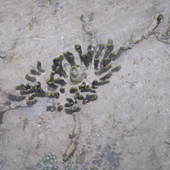 Creeping 'rhizomes' sometimes extending from the sponge. Labrador, Jun 08 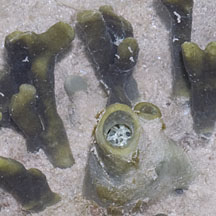 |
|
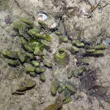 Labrador, Feb 06 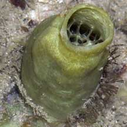 |
 Pulau Semakau, Aug 11 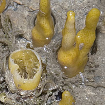 |
|
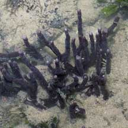 Labrador, Jul 05 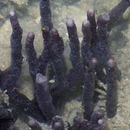 This is possibly Oceanapia sp. and NOT a Daisy sponge |
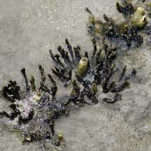 Sisters Island, Jul 06 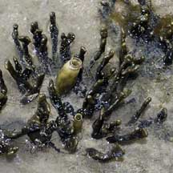 |
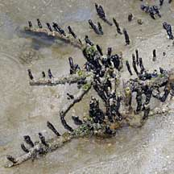 Terumbu Pempang Darat, Jun 10 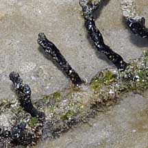 Fingers sticking up from horizontal stem. |
*Sponge species are difficult to positively identify without close examination.
On this website, they are grouped by external features for convenience of display.
| Daisy sponges on Singapore shores |
| Photos of Daisy sponges for free download from wildsingapore flickr |
| Distribution in Singapore on this wildsingapore flickr map |
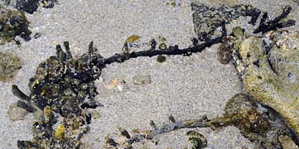 Pulau Berkas, May 10 |
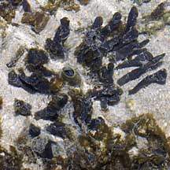 Pulau Salu, Jun 10 |
|
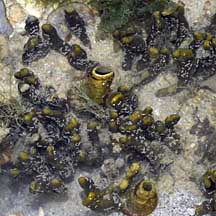 Pulau Biola, Dec 09 |
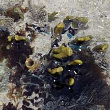 Terumbu Berkas, Jan 10 |
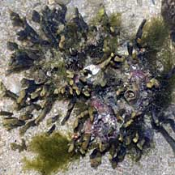 Terumbu Salu, Jan 10 |
|
Links
References
|